【サカつく2026】約4ヶ月ぶりのムービング超強化!!新SP「キリアン・エンバペ」は引くべき？プレミアムSP選手スカウト評価
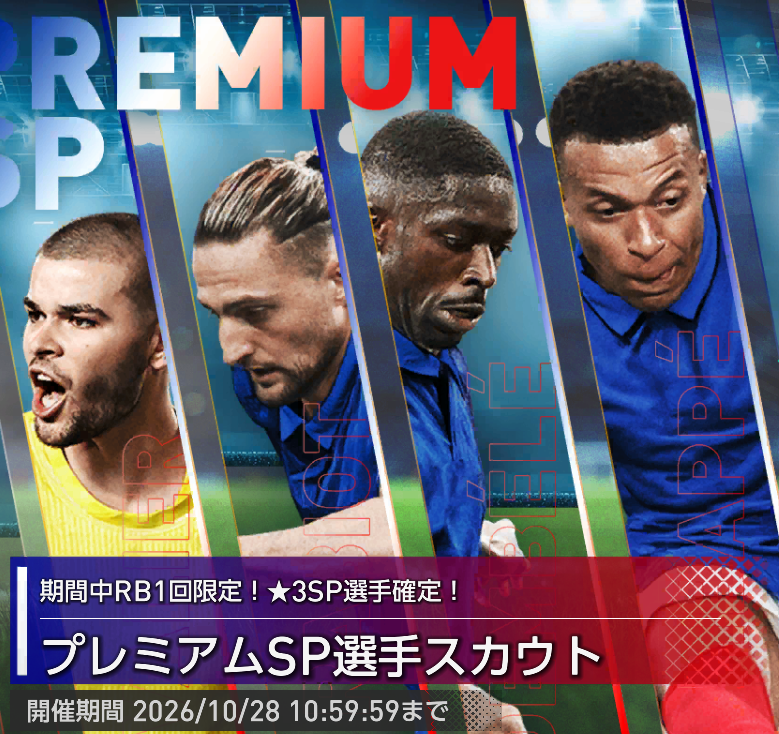
2026年9月30日、約4ヶ月ぶりにムービングポリシーを大きく強化する「プレミアムSP選手スカウト」が登場しました。ピックアップはキリアン・エンバペ、ウスマン・デンベレ〔2026〕、アドリアン・ラビオ、リュカ・シュヴァリエの4名。最大総合力だけでなく、フランス強化の金フォーメーションコンボ「レ・ブルー'26」との相性が大きな判断材料になります。本記事では提供割合、4選手のおすすめ度、最大総合力ランキング、競合選手、代用・互換候補まで整理し、今このガチャを引くべきかを解説します。
先に結論：ムービング強化なら優先度は高い。ただし今すぐ全力は不要
ムービングを主力にしているなら、今回のプレミアムSP選手スカウトは引く価値がかなり高いです。4名すべてがムービングで、エンバペはCF、デンベレはAM、ラビオはDM、シュヴァリエはGKと、主要ポジションを一気に更新できます。
さらに重要なのが、フランス強化の金フォメコン「レ・ブルー'26」。現状、今回の4名を除くとフランス国籍かつムービングのSP選手は非常に少なく、フランス軸の最強編成を目指すなら今回の4名をまとめて確保する価値が高くなります。
ただし、開催期間は2026年10月28日10:59までと長めです。しかも現時点では「CB：スプリントCBⅡ」の条件を今回のスカウトだけでは満たせず、レ・ブルー'26編成を今回だけで完成させることはできません。10月中の追加SPでフランス国籍選手が増える可能性もあるため、まずは1日1回100RBを消化しつつ、追加ラインナップを見てから本格的に回す判断でも遅くありません。
それでも今回の4名は総じて高性能。特にデンベレとラビオは代用候補が存在しないプレースタイルLvⅢで、ムービング編成を詰めるなら確保優先度は非常に高いです。
プレミアムSP選手スカウトの注目ポイント
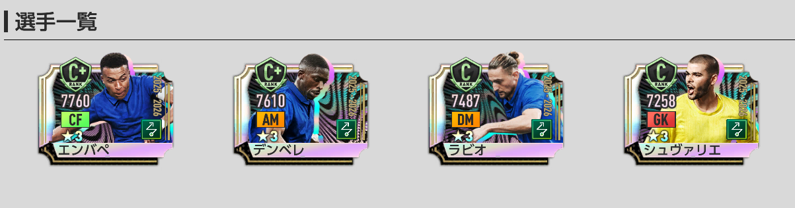
- 開催期間：2026年9月30日（水）メンテナンス終了後～10月28日（水）10:59
- ★3排出率は5％。
- 排出対象の★3は、2026年9月9日までに登場した選手まで。
- 1回限定3000RBの★3確定10連は、確定枠がピックアップ確定ではない。
- ただし1～9枠目の★3には今回のピックアップ4名が含まれる。
- 「通常」タブの1日1回100RB、300GB／3000GBでも★3排出率5％かつピックアップあり。
- 開催終了後、今回のピックアップ4名は通常のSP選手スカウトには追加されない。
- 開催終了後、「プレミアムSP選手スカウトメダル」は1枚につき「SP選手スカウトメダル」1枚へ変換される。
前回のファイブピックアップSPとは仕様が異なります。3000RBを使えば今回の4名が1人確定するわけではないため、確定枠だけを目的に回す場合は注意が必要です。
排出率・提供割合を確認
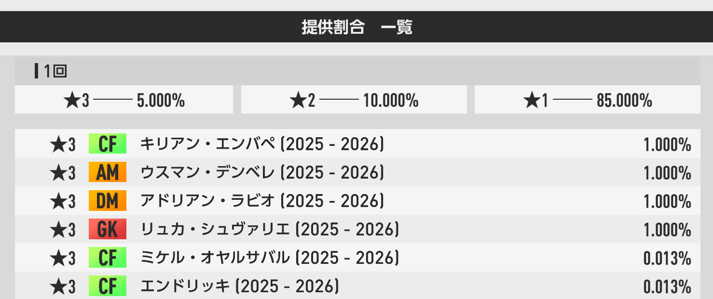
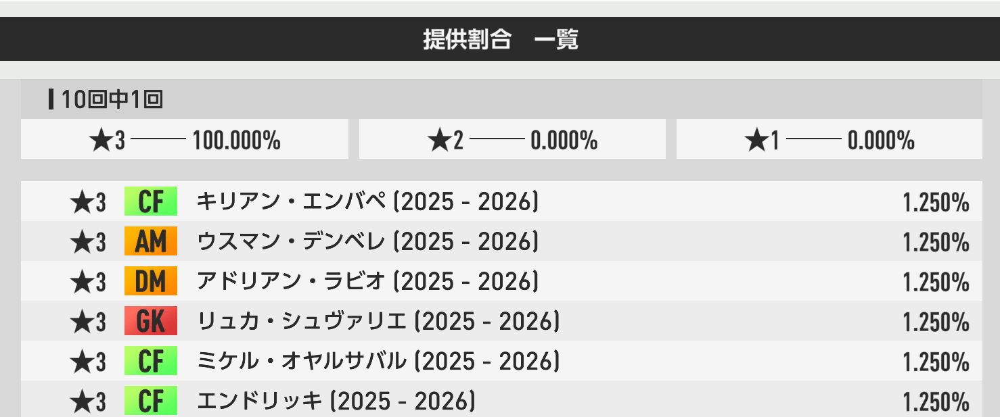
通常タブの1日1回100RBでも★3排出率5％かつピックアップ対象あり。さらに専用メダルは開催終了後にSP選手スカウトメダルへ1:1で変換されます。開催期間が長いため、いきなり大量投入せず、まず100RBを継続しながら追加選手を待つ戦略と相性が良いガチャです。
プレミアムSP・新SP4名のおすすめ度
レ・ブルー'26のAMキー。ムービング初のアタッカーⅢで代用不可。
レ・ブルー'26のDMキー。ムービング初のセントラルMFⅢ。
ムービングCF最大総合力1位。限定ハーランドで役割代用は可能。
ムービングGK最大総合力1位。強いが他3名より唯一無二性は低め。
おすすめ度は「今回のスカウトで確保する優先度」です。最大総合力だけではなく、レ・ブルー'26との相性、代用の有無、既存選手との差まで含めて評価しています。
今回の4名は誰に刺さる？
4名全員がムービング。CF・AM・DM・GKを一気に更新でき、約4ヶ月ぶりの大型補強です。
デンベレとラビオは発動条件キー。フランス国籍ムービングが少ないため、エンバペとシュヴァリエも編成価値が高いです。
エンバペは限定ハーランド、シュヴァリエはジョアン・ガルシアで役割代用が可能。深追い優先度は手持ちで変わります。
今回の最大のポイントは「4名とも強いが、今すぐ全力で完成を狙う必要はない」こと。レ・ブルー'26は現時点でCBのスプリントCBⅡが不足しており、今回だけでは完成しません。開催期間の長さを活かして、追加フランス選手を確認してから追うのが安全です。
プレミアムSP・新SP4名を徹底評価
おすすめ度：今回のスカウトでその選手を確保する優先度。
最大総合力ランキングに加え、フォメコン適性、既存の競合、プレースタイルの希少性まで含めて判断しています。
代用選手：同ポリシー＋適性ポジションが重なる＋同プレースタイル。
互換選手：適性ポジションが重なる＋同プレースタイル。
プレースタイルLvは既存仕様どおり、ベースがLvⅢならLvⅢのみ、ベースがLvⅡならLvⅡまたはLvⅢを対象にします。★3SPから最大総合力順で最大3名を掲載します。
P0436 / プレミアムSP
キリアン・エンバペ
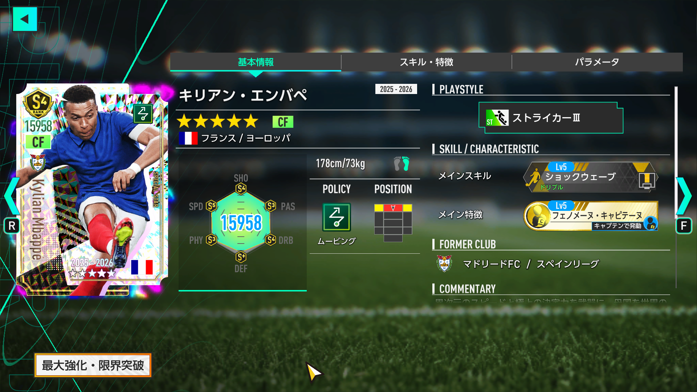
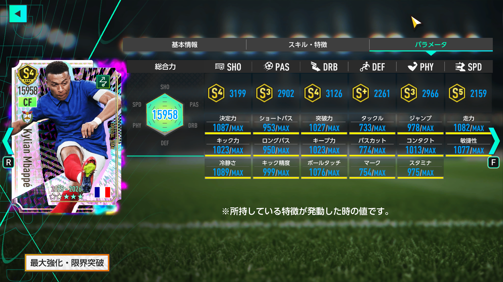
最大総合力ランキング
| 全SP選手 | 4位 / 439人 |
|---|---|
| ムービング | 1位 / 98人 |
| CF | 3位 / 88人 |
| ストライカーⅢ | 2位 / 6人 |
ムービングCFの★3SPでは18人目で、最大総合力は1位。さらにフランス国籍のムービングCFとして初実装です。金フォメコン「アルビセレステ'01」「カナリア軍団'06」「ソベラーノ'94」の発動条件キーとして採用でき、フランス軸の「レ・ブルー'26」でも最前線の主力候補になります。
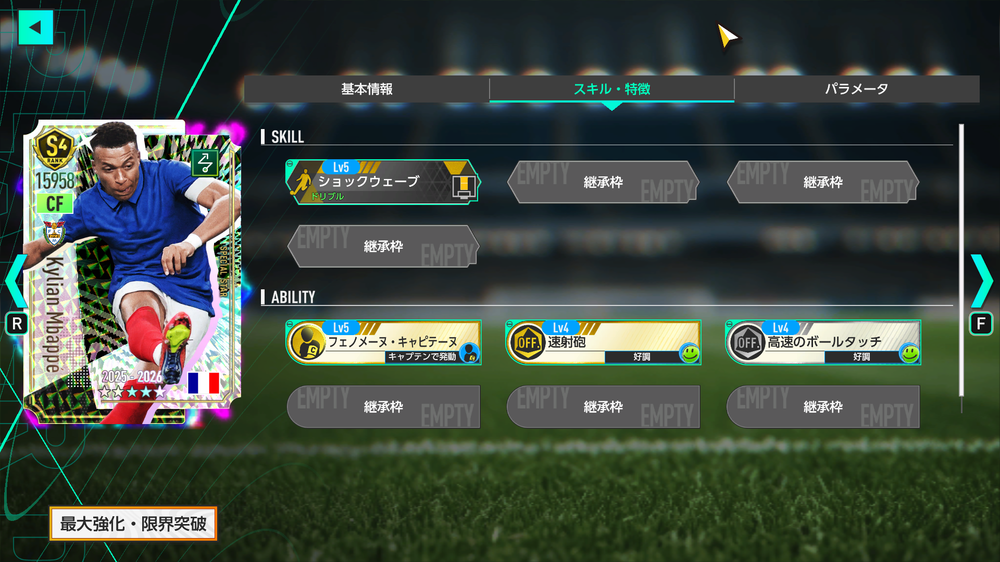
登録データ上の主なスキル：ショックウェーブ（金）
特徴：フェノメーヌ・キャピテーヌ（金／発動：キャプテン）、速射砲（金／発動：好調）、高速のボールタッチ（銀／発動：好調）
評価：おすすめ度 ★★★★☆
レ・ブルー'26でフランス最強編成を目指すなら、確保したい最上位CFです。最大総合力15,958は全SPでも4位、ムービングでは堂々の1位。さらに3TOPを採用する編成では、金特徴「フェノメーヌ・キャピテーヌ」を活かしたキャプテン起用まで含めて価値があります。
同じムービングCF・ストライカーⅢのアーリング・ハーランドと比べても、最大総合力、所持スキル、所持特徴、PAS、DRB、PHYで優位。SHOやSPDでも大きく見劣りしないため、ムービングを強くしていない人でも将来を見据えて確保しておきたい性能です。
ただし、役割だけで見れば限定ハーランドで代用できます。ハーランドを完凸で持っている場合は、デンベレやラビオほど「いないと代えが効かない」存在ではありません。フランス国籍ボーナスまで突き詰めるかどうかで深追い優先度を決めましょう。
代用・互換選手
最大総合力順で最大3名を掲載しています。
代用選手
同ポリシー＋適性ポジション＋プレースタイル- 国籍
- ノルウェー
- ポリシー
- ムービング
- ポジション
- CF
- プレースタイル
- ストライカーⅢ
- 最大総合力
- 15,702
互換選手
適性ポジション＋プレースタイル- 国籍
- ポルトガル
- ポリシー
- リアクション
- ポジション
- CF
- プレースタイル
- ストライカーⅢ
- 最大総合力
- 15,972
- 国籍
- ポーランド
- ポリシー
- カウンター
- ポジション
- CF
- プレースタイル
- ストライカーⅢ
- 最大総合力
- 15,748
- 国籍
- フランス
- ポリシー
- ポゼッション
- ポジション
- CF
- プレースタイル
- ストライカーⅢ
- 最大総合力
- 15,703
P0437 / プレミアムSP
ウスマン・デンベレ〔2026〕
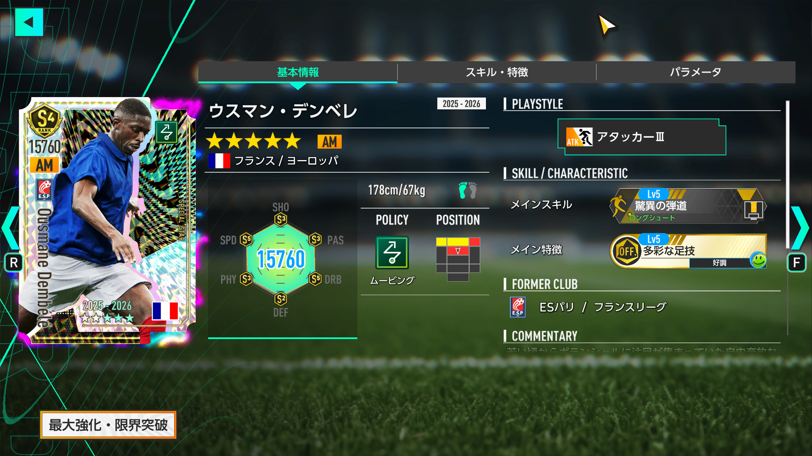
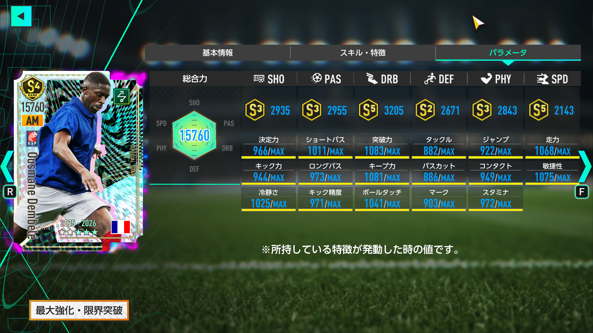
最大総合力ランキング
| 全SP選手 | 10位 / 439人 |
|---|---|
| ムービング | 3位 / 98人 |
| AM適性 | 3位 / 85人 |
| アタッカーⅢ | 1位 / 3人 |
ムービングでAM適性を持つ★3SPでは12人目で、最大総合力は1位。ムービングのアタッカーⅢは初実装です。金フォメコン「レ・ブルー'26」のAM：アタッカーⅢ条件を直接満たし、「ソベラーノ'94」のキーとしても採用できます。
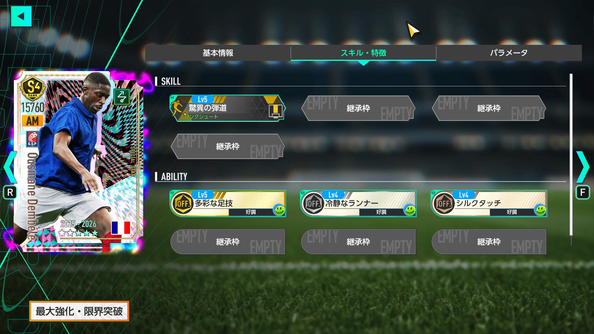
登録データ上の主なスキル：驚異の弾道（金）
特徴：多彩な足技（金／発動：好調）、冷静なランナー（銀／発動：好調）、シルクタッチ（銅／発動：好調）
評価：おすすめ度 ★★★★★
今回の4名で最優先クラス。レ・ブルー'26を使うなら確保したいAMです。ムービングAMは、本田圭佑やオマル・マーモウシュ以来となるワールドクラス級の更新候補。しかも両者は現在入手不可で、デンベレ自身も開催終了後に通常SPへ追加されないため、逃すと次の入手機会が読みにくくなります。
最大の価値はムービング初のアタッカーⅢであること。既存ルールで代用選手を探しても同ポリシー・同適性・同プレースタイルLvⅢに該当する候補が存在しません。レ・ブルー'26の発動条件を直接満たす点まで含め、今回の中でも希少性はトップクラスです。
AMだけでなくRW適性も持つため、編成変更への対応力もあります。フランス編成だけでなく、ムービング全体の中盤・前線を長く支えられる1枚として評価できます。
代用・互換選手
最大総合力順で最大3名を掲載しています。
代用選手
同ポリシー＋適性ポジション＋プレースタイル該当する代用選手はありません。
互換選手
適性ポジション＋プレースタイル- 国籍
- イングランド
- ポリシー
- カウンター
- ポジション
- AM
- プレースタイル
- アタッカーⅢ
- 最大総合力
- 15,749
- 国籍
- フランス
- ポリシー
- リアクション
- ポジション
- AM
- プレースタイル
- アタッカーⅢ
- 最大総合力
- 15,484
P0438 / プレミアムSP
アドリアン・ラビオ
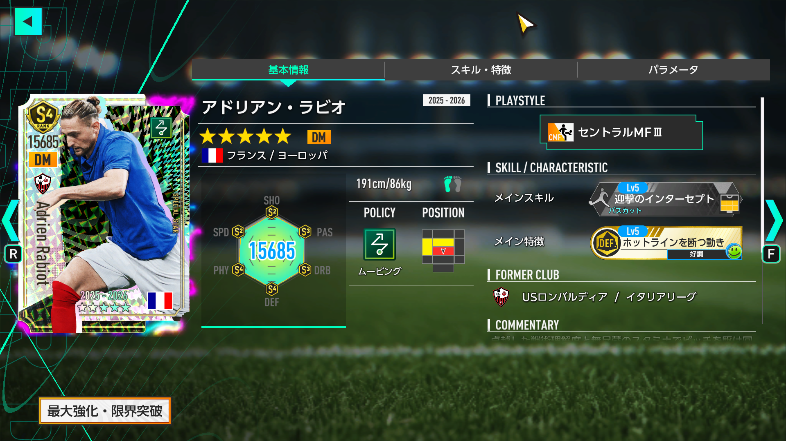
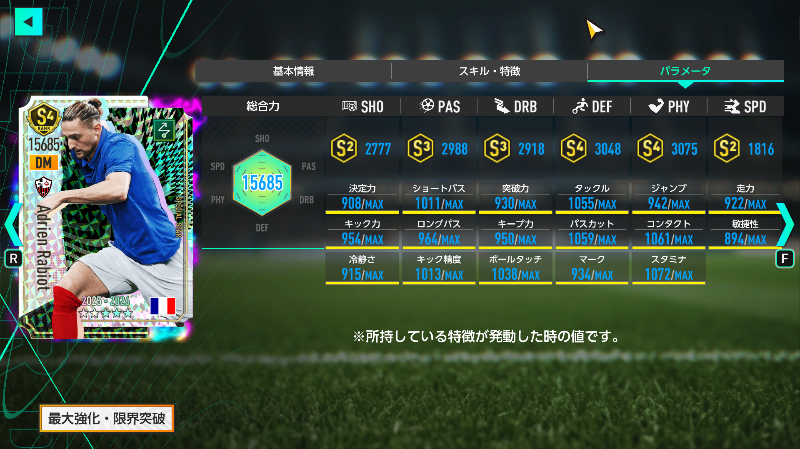
最大総合力ランキング
| 全SP選手 | 21位 / 439人 |
|---|---|
| ムービング | 5位 / 98人 |
| DM | 2位 / 60人 |
| セントラルMFⅢ | 1位 / 4人 |
ムービングDMの★3SPでは16人目で最大総合力1位。さらにムービングのセントラルMFⅢは初実装です。金フォメコン「レ・ブルー'26」のDM：セントラルMFⅢ条件を直接満たし、「ネラッズーロ'10」のキーとしても採用できます。
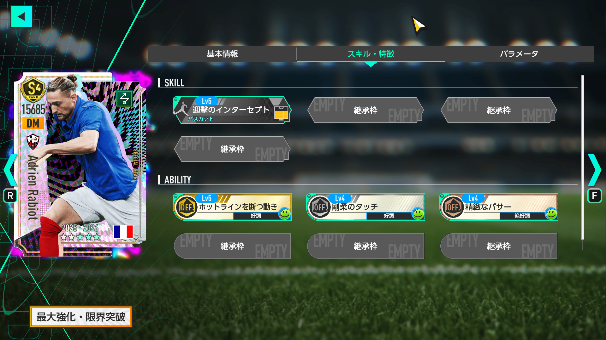
登録データ上の主なスキル：迎撃のインターセプト（銀）
特徴：ホットラインを断つ動き（金／発動：好調）、剛柔のタッチ（銀／発動：好調）、精緻なパサー（銅／発動：絶好調）
評価：おすすめ度 ★★★★★
デンベレと並ぶ今回の最優先候補。レ・ブルー'26ではDMの発動キーとしてそのまま入ります。4-3-3BでDMを2枚置く構成では、既存の強力なムービングDMであるスコット・マクトミネイと並べる形も組みやすく、中盤の完成度を一気に上げられます。
2026年9月実装のコビー・メイヌーと比べても、最大総合力、所持特徴、SHO、PAS、PHYで優位。DRBやDEFも大きく見劣りせず、総合的には明確な更新候補です。
さらに、ムービング初のセントラルMFⅢという希少性が大きな強み。同ポリシー・同ポジション・同プレースタイルLvⅢの代用候補は現時点で存在しません。レ・ブルー'26を使わない場合でも、ムービング中盤の長期戦力として確保価値は高いです。
代用・互換選手
最大総合力順で最大3名を掲載しています。
代用選手
同ポリシー＋適性ポジション＋プレースタイル該当する代用選手はありません。
互換選手
適性ポジション＋プレースタイル- 国籍
- ウルグアイ
- ポリシー
- リアクション
- ポジション
- DM
- プレースタイル
- セントラルMFⅢ
- 最大総合力
- 15,533
- 国籍
- イタリア
- ポリシー
- カウンター
- ポジション
- DM
- プレースタイル
- セントラルMFⅢ
- 最大総合力
- 15,423
- 国籍
- 日本
- ポリシー
- ポゼッション
- ポジション
- DM
- プレースタイル
- セントラルMFⅢ
- 最大総合力
- 15,169
P0439 / プレミアムSP
リュカ・シュヴァリエ
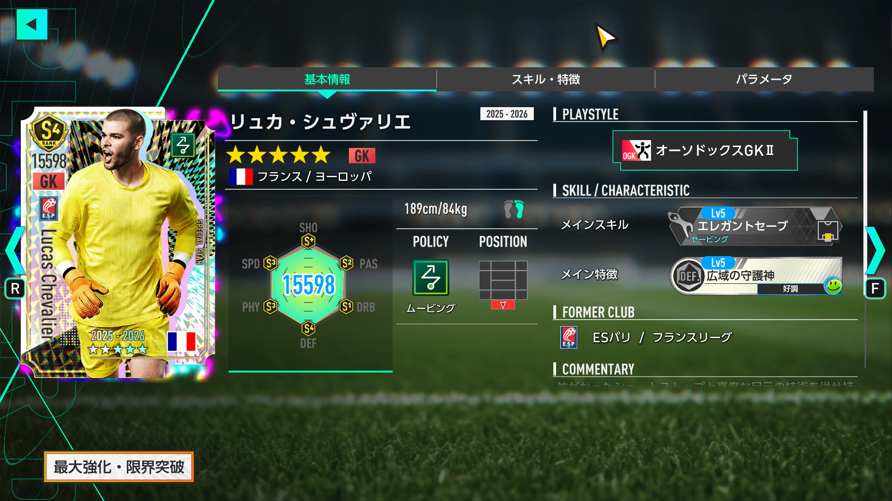
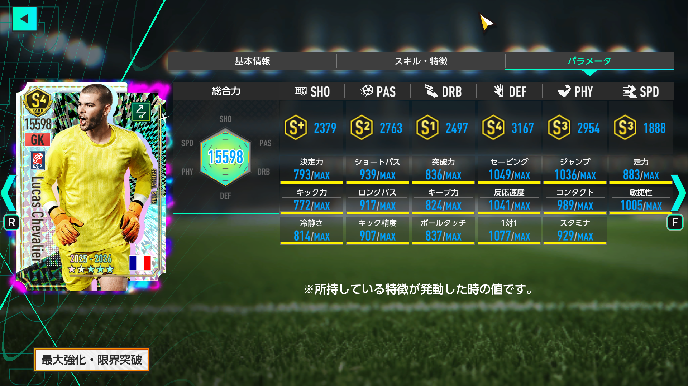
最大総合力ランキング
| 全SP選手 | 32位 / 439人 |
|---|---|
| ムービング | 9位 / 98人 |
| GK | 5位 / 39人 |
| オーソドックスGKⅡ | 5位 / 36人 |
ムービングGKの★3SPでは7人目で最大総合力1位。フランス国籍のムービングGKとしても初実装です。一方、オーソドックスGKⅡを発動条件に持つ金フォメコンは現状なく、フォメコンの「必須キー」という意味ではデンベレやラビオより優先度が下がります。
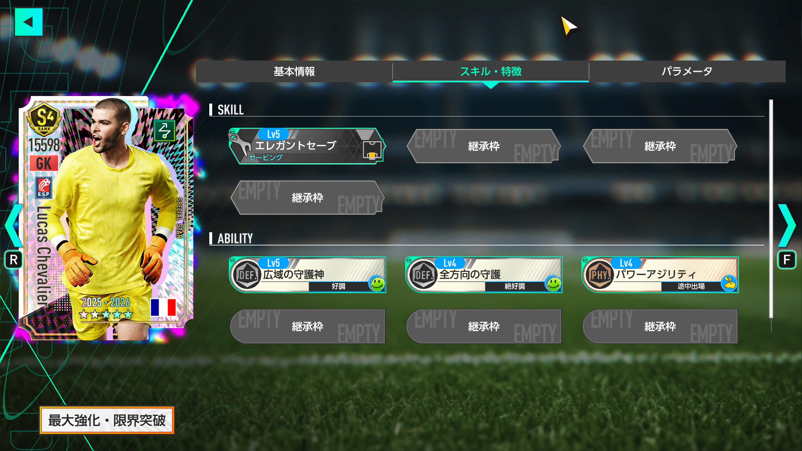
登録データ上の主なスキル：エレガントセーブ（銀）
特徴：広域の守護神（銀／発動：好調）、全方向の守護（銀／発動：絶好調）、パワーアジリティ（銅／発動：途中出場）
評価：おすすめ度 ★★★☆☆
フランス国籍ムービングのGKを完成させたいなら、今回確保しておきたい選手です。最大総合力15,598でムービングGK1位。恒常SPのジョアン・ガルシアと比べても、最大総合力に加えてPAS・PHY・SPDなどで上回り、純粋な戦力更新として十分強いです。
ただし、他の3名ほど唯一無二ではありません。同じムービング・GK・オーソドックスGKⅡにはジョアン・ガルシアをはじめ複数の代用候補が存在し、金フォメコンの発動条件にも直結しません。
そのため、最強のムービングフランス編成を作るなら欲しいが、一般的なムービング強化なら後回しでもよいという位置づけ。4名コンプリートを狙う過程で引ければ非常にうれしい1枚ですが、シュヴァリエ単独を深追いする優先度は低めです。
代用・互換選手
最大総合力順で最大3名を掲載しています。
代用選手
同ポリシー＋適性ポジション＋プレースタイル- 国籍
- スペイン
- ポリシー
- ムービング
- ポジション
- GK
- プレースタイル
- オーソドックスGKⅡ
- 最大総合力
- 15,251
- 国籍
- 日本
- ポリシー
- ムービング
- ポジション
- GK
- プレースタイル
- オーソドックスGKⅡ
- 最大総合力
- 14,724
- 国籍
- ブラジル
- ポリシー
- ムービング
- ポジション
- GK
- プレースタイル
- オーソドックスGKⅡ
- 最大総合力
- 14,702
このガチャを引くべき人・見送る人
引く価値が高い人
- ムービング編成を主力にしている
- レ・ブルー'26を今後の主力フォメコンにしたい
- AMのアタッカーⅢ、DMのセントラルMFⅢを確保したい
- 限定ハーランド未所持でムービングCFを更新したい
- フランス国籍ムービングをできるだけ多く集めたい
- 1日1回100RBでメダルを貯めながらピックアップを狙いたい
今すぐ全力でなくてよい人
- ムービングを主力にする予定がない
- ハーランドなど強力な代用選手を十分に所持している
- レ・ブルー'26を使う予定がない
- 追加フランス選手の内容を確認してから判断したい
- 3000RBの★3確定枠でピックアップ確定だと思っていた
まとめ：ムービング強化なら今年トップクラスの重要ガチャ。ただし焦って全力は不要
今回のプレミアムSP選手スカウトは、約4ヶ月ぶりにムービングを大きく更新する4名が一度に登場した重要ガチャです。エンバペはムービングCF最大総合力1位、デンベレはムービング初のアタッカーⅢ、ラビオはムービング初のセントラルMFⅢ、シュヴァリエはムービングGK最大総合力1位。4名とも明確な強みがあります。
中でもおすすめ度★★★★★のデンベレとラビオは、レ・ブルー'26の発動条件を直接満たし、同ポリシーでの代用候補も存在しません。今後ムービングを本気で使うなら、長く編成に残る可能性が高い2名です。
エンバペも性能面では超一級。限定ハーランドという代用はいるものの、最大総合力やスキル・特徴を含めて更新幅は大きく、フランス国籍まで考えるなら優先して確保したいCFです。シュヴァリエは強い一方で代用が多く、4人の中では優先順位が一段下がります。
ただし、今回だけでレ・ブルー'26を完成させられないことは忘れないようにしましょう。CBのスプリントCBⅡが不足しており、10月中に追加フランス選手が登場する可能性もあります。開催終了は10月28日なので、今すぐRB／GBを使い切る必要はありません。
現時点の立ち回りとしては、1日1回100RBを継続し、追加ラインナップを確認したうえで必要なら本格的に追うのが最も無駄が少ない選択です。専用メダルも終了後にSP選手スカウトメダルへ変換されるため、ムービングを強化したい人にとっては、おはガチャだけでも参加価値の高いスカウトです。
※本記事のガチャ条件・おすすめ度・ランキング数値は、2026年9月30日更新の記事データおよび画像を基準にしています。スキル・特徴、代用／互換候補、入手可否はplayers.jsonで照合しています。代用／互換のプレースタイルLv判定は当サイト既存仕様（ベースLvⅡ→LvⅡまたはLvⅢ、ベースLvⅢ→LvⅢのみ）に準拠しています。